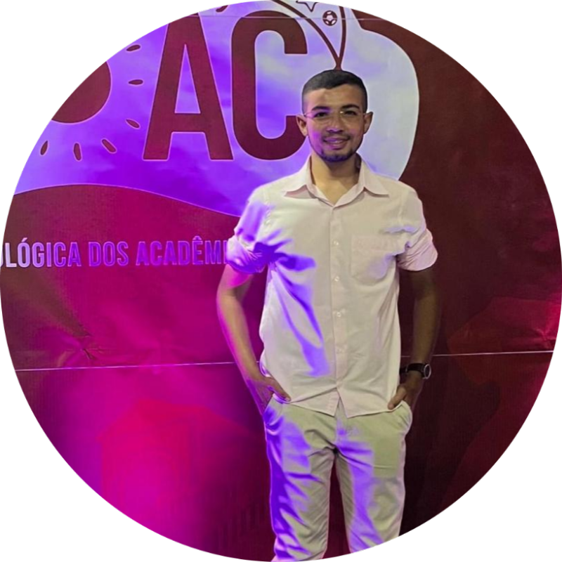
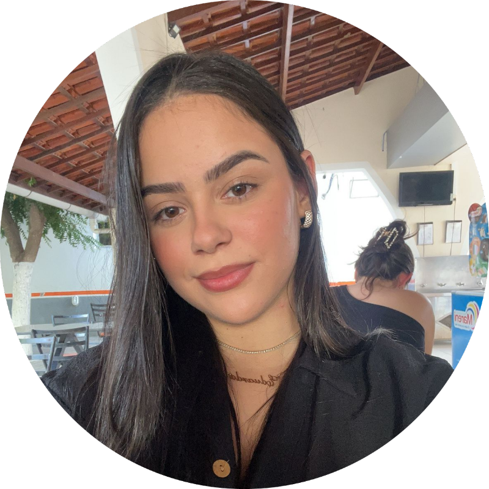

DESCUBRA MAIS
Incentivo à formação de grupos de estudo e liqa acadêmicas que contemplem desde o primeiro semestre do curso.
Estímulo à produção do currículo lattes desde o início do curso para aumentar a experiência profissional.
Parcerias esportivas que colaborem com outras instituições para ampliar a prática esportiva.
QUEM SOMOS
Pâmela é presidente da Chapa UniOdonto, suas propostas tem como objetivo fortalecer a parceria entre discentes e gestão, promovendo comunicação, união e a defesa dos interesses dos acadêmicos.
Thiery é vice-presidente da chapa uniodonto, suas propostas têm como objetivo favorecer a comunicação com docentes, funcionários e reitoria. Buscando sempre o aprimoramento e desenvolvimento do curso
Cesar é secretário da chapa uniodonto. Suas propostas tem como objetivo integrar tecnologias e desenvolvimento de sistemas buscando eficiência, aprimoramento e gestão do curso de odontologia.
Eduarda é do marketing da chapa uniodonto. Suas propostas tem como objetivo divulgar e dar mais visibilidade para o curso mostrando a rotina do dia a dia dos alunos nas clínicas, salas de aula, laboratório de estudo entre outros.
Charles é diretor da parte científica da chapa uniodonto. Comprometido em promover a integração e o incentivo à pesquisa, propõe a criação eventos científicos para troca de experiências e projetos que envolvam alunos desde o primeiro semestre.
Nossa proposta é implementar a formação de grupos de estudo e ligas acadêmicas desde o início do semestre, promovendo troca de conhecimentos, integração e desenvolvimento acadêmico.
Essas iniciativas fortalecem habilidades, aprofundam áreas de interesse e ampliam o contato com a prática profissional.
Nossa proposta é priorizar os alunos a iniciarem a construção de seus Currículos Lattes desde o início do curso, com o objetivo de orientá-los passo a passo nesse processo.
Essa prática possibilita o registro de atividades acadêmicas e científicas, enriquecendo a formação e fortalecendo o perfil profissional para futuras oportunidades no mercado de trabalho e na pesquisa.
Nossa proposta visa a parceria esportiva entre instituições de ensino como uma iniciativa estratégica que promove o desenvolvimento de atletas e fortalece os laços entre as universidades.
Essa união possibilita a troca de experiências, recursos e conhecimento, criando um ambiente mais rico para o crescimento pessoal e esportivo dos acadêmicos.